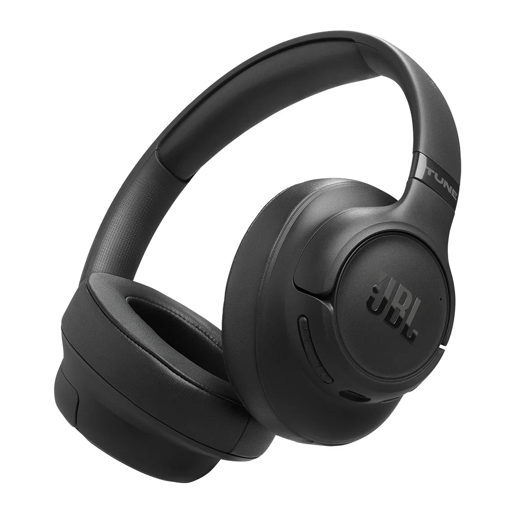

A JBL speaker is an audio output device manufactured by the American audio electronics company JBL that converts electrical audio signals into sound for personal or professional listening.
These devices function by converting electrical audio signals into sound waves through components like drivers and voice coils and magnets to deliver high fidelity audio performance. They are widely recognized across the globe for their distinct sound profile known as JBL Signature Sound which emphasizes a deep punching bass response paired with clear mid-range frequencies and crisp vocal clarity.
| Product | Specifications |
|---|---|
| JBL Tour One M2 | The JBL Tour One M2 are wireless over-ear headphones featuring True Adaptive Noise Cancelling, spatial audio and up to 50 hours of battery life. |
| JBL Tune 770NC | The JBL Tune 770NC are lightweight, wireless over-ear headphones featuring Adaptive Noise Cancelling with Smart Ambient, signature JBL Pure Bass Sound and up to 70 hours of battery life. |
| JBL Tune 520BT | The JBL Tune 520BT wireless on-ear headphones feature up to 57 hours of battery life, Bluetooth 5.3 connectivity and JBL Pure Bass Sound. |